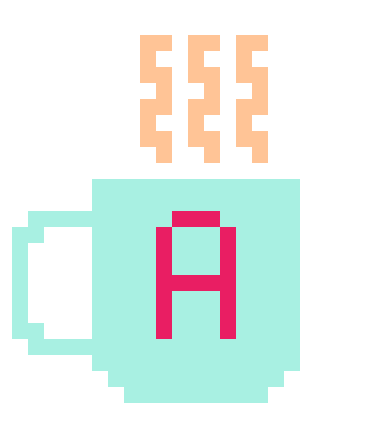
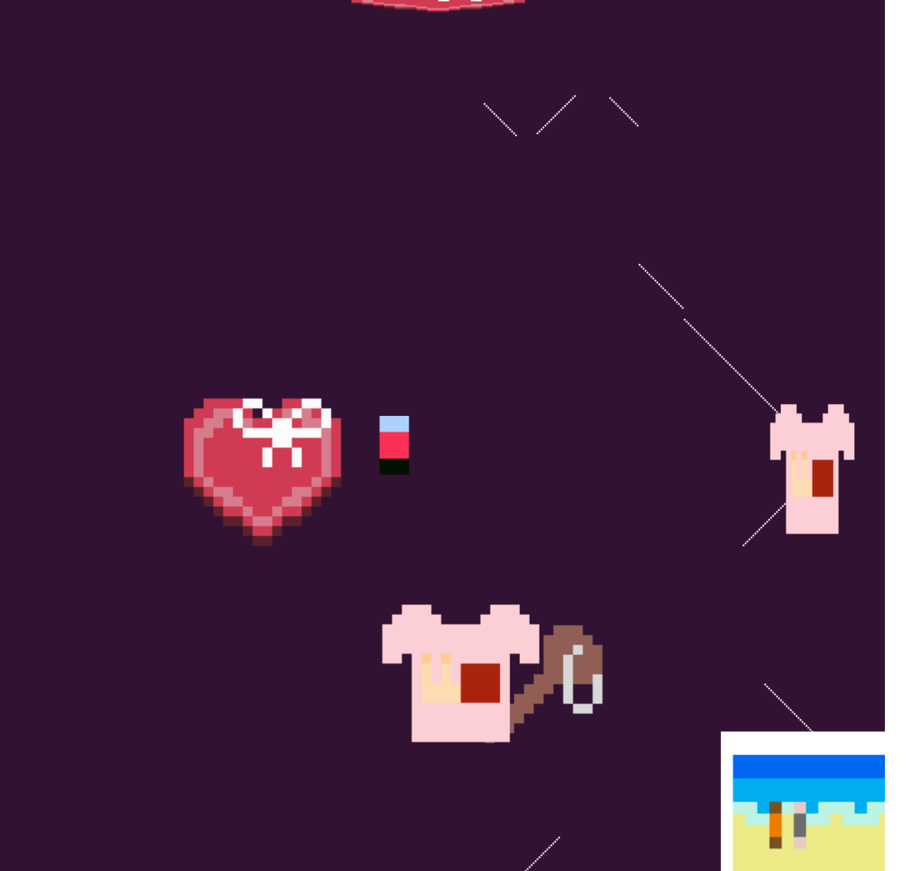

For our midterm project, we decided to create an art game about relationships. After many discussions about our personal experiences and what we wanted to draw on for inspiration, we decided to center the game on the idea that past relationships never truly fade away. To achieve this, we started out by looking at the tile-based game examples, before settling on a simple semi-procedurally generated open world game. The player character is meant to move around the world in order to find a number of memories. The memories, like t shirts, mugs, old unread text messages, are supposed to represent hangovers from previous relationships. Once the player has acquired a memory, the world begins to change and the "ghost" of the object permeates throughout the environment. This creates either a visual or audio effect that affects the experience of the user's playthrough.
To actually build the game, we started by designing assets. We settled on using an 8-bit art style for all of the assets, and made them ourselves using various browser and offline pixel art editors. The memory graphics were generally designed with tools like make8bitart and Piskel, while more elaborate graphics, such as the intro sequence and our inital mock up of the game, were made with Adobe Creative tools like Photoshop and Illustrator. 8-bit visuals lend themselves well to a more ambiguous interpretation of the game details, like the gender of the player character. We wanted to leave ideas like that more open-ended so that the game could have a more universal feel and connect with more players personally. The memory artifacts were of particular importance to the game mechanics, and we wanted them to have symbolic importance as well. The memories take on the form of physical objects that were left behind, like an ex's old shirt, an extra set of apartment keys, or a polaroid from a happier time. Each one is meant to evoke a sort of relatable and nostalgic feelings. We then looked for various sound effects to pair with some of the artifacts, such as the sound of keys jangling or a text message being sent.
Many of the objects and visuals we designed went through several iterations. The mug, for example, was redesigned a couple of times.

We also ran into our fair share of technical ssues with our prototypes, including problems with the tint() method and frame rate slowdowns.

The actual game itself largely consists of 4 classes and their associated methods. There is a player class, a memory class, an obstacle class, and a footprint class (for effects). The player class initializes and displays the actual player character and its sprite. The memory class governs the appearance of and effect of each memory artifact, and allows us to control the way it interacts with the user. The obstacle class spawns objects in the world that help create the environment. And finally, the footprint class draws a little trail behind the player character to give the impression of movement - we do this by creating a tiny shape that is drawn to the screen, and can help a player keep track of where they've already explored.
To run the game, we have made use of the preload() function to load in all of our visual and audio assets. The assets are stored in arrays to make it easier to work with and manipulate them later. After that, we instantiate our player character, and we use for-loops and arrays to instantiate the six memory artifacts, and large number of the tree, rock, and cloud sprites that we use as obstacles. Player and world movement is deteremined by the helper "movement" function. Then the draw loop takes over by starting up the opening narrative sequence (which is navigable via clicks) and launching the game. Every time the player touches a memory, it triggers an effect and also increments the number of memories that have been found. Once the player has found all the memories, the game ends.
CREDITS:
Code, Artwork, Design by Emily Fong & Easton Self
cafe sound by adroel
beach sound by InspectorJ
arguing sound by The Hollywood Edge Sound Effects Library
rain sound by Arctura
music by Toby Fox, "Memory" from Undertale
footstep sound by OwlStorm
coffee sound by freesound.org
candy sound by freesound.org
camera sound by freesound.org
key sound by freesound.org
cloth sound by leonelmail
message sound by Apple (smh...)